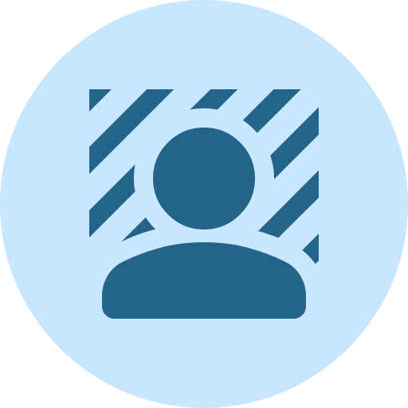

Free for non-commercial use. The model and its runtime get downloaded once, then work even when you're offline. Images never leave your device.

Remove the background from any image. Runs on your device, so images never leave it.